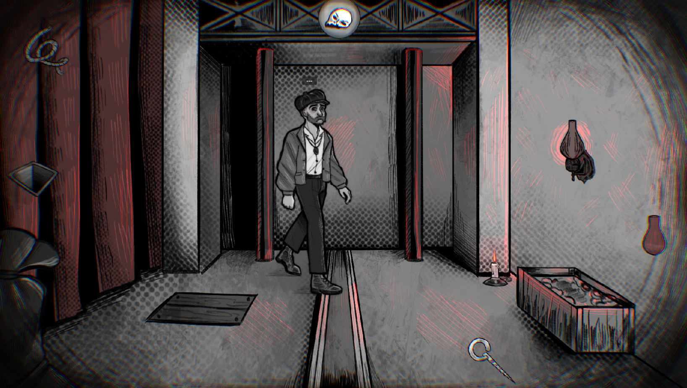

This game was made in a week during Le Ludocamp 2025, an game creation event in Avignon (France). It is inspired by the novel Le Fantôme de l'Opéra by Gaston Leroux. You play as the ghost of the Opéra Garnier trying to get rid of the machinist Joseph Buquet who discovered your secret lair.
